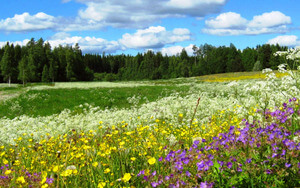
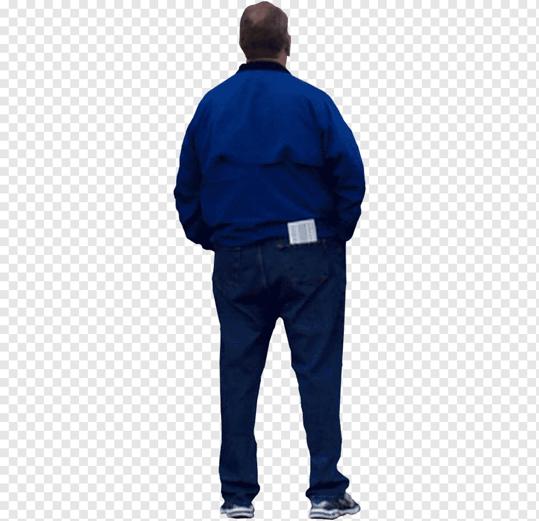

| Мир цифрового фото Артема Кашканова | ||||||||
|---|---|---|---|---|---|---|---|---|
| последнее обновление - 21 октября 2002 г. Введен раздел "Ссылки" | ||||||||
| Обо мне | Моим друзьям | Мой компьютер | Ссылки | Гостевая книга | В избранном | |||
МОИ РАБОТЫ2002 годОСЕНЬ ЛЕТО ВЕСНА |

ДОБРО ПОЖАЛОВАТЬ НА МОЙ САЙТ!История программирования уходит своими корнями в такую глубину веков, что аж диву даёшься. Например, антикитерский механизм — механическое устройство для расчёта движения небесных тел — датируется второй половиной второго века до нашей эры! Он состоял из бронзовых шестерён, помещённых в прямоугольный деревянный корпус, на передней и задней панели которого размещались циферблаты со стрелками. При помощи антикитерского механизма можно было узнать точную дату более чем сорока астрономических событий. Этот древнегреческий механизм — самый древний из известных нам калькуляторов. Перенесёмся на 2000 лет вперёд — в 1804 году Жозеф Мари Жаккар создаёт и строит свой революционный жаккардовый ткацкий станок. Почему «революционный»? Потому что в этом устройстве, на первый взгляд далёком от современного понятия программирования, впервые в истории использовались перфокарты, при помощи которых станку можно было задать разные виды узоров на ткани. Популярность американского Фортрана озадачила европейских специалистов. Им вовсе не хотелось, чтобы его автор, компания IBM, заняла монопольное положение на рынке, поэтому математики из Швейцарии разработали Алгол (ALGOL) в качестве альтернативы Фортрану. С этого момента — с 1960-х годов — начинается история современных языков программирования. Большой интерес к этой области, а также наличие конкурирующих компаний, для которых компьютеры и языки, способные ими управлять, были делом не только бизнеса, но и личного интереса, способствовали бурному развитию этой отрасли. Появлялись всё новые и новые, более совершенные языки. Но это уже, как говорится, совсем другая история. |
ФАУНА И ФЛОРА2002 годПРО СОБАКУ МОНТАЖ |
||||||
| Спасибо за внимание! | ||||||||